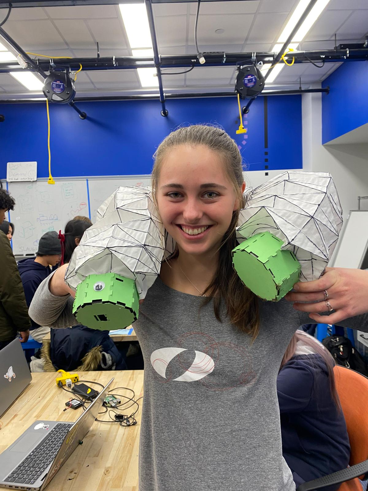
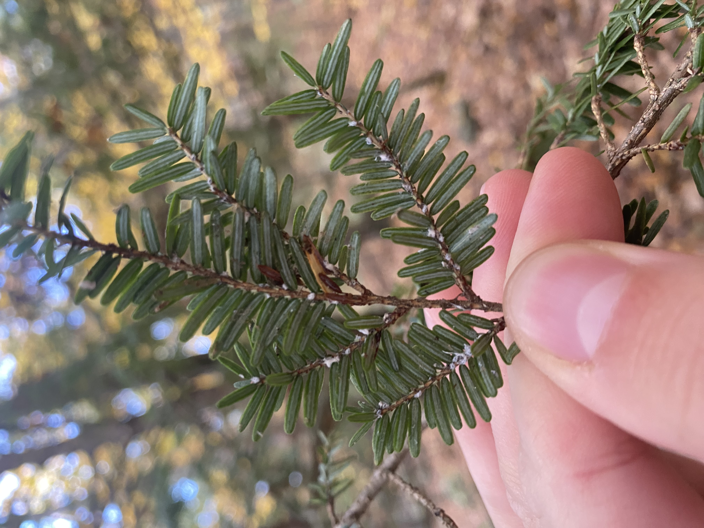
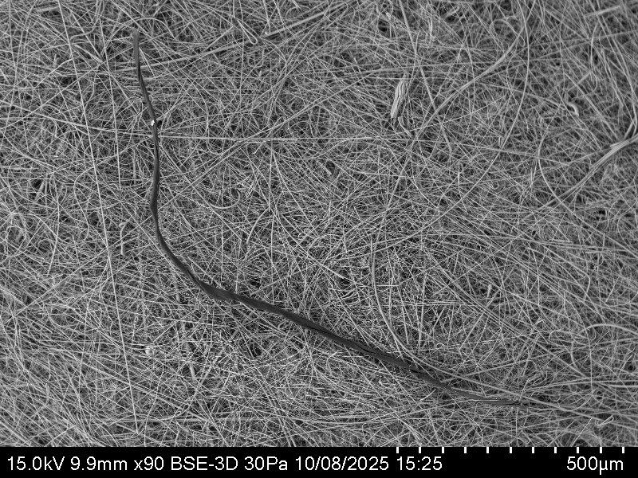

Projects throughout my college career, from course projects to passionate pursuits.

Soil Analyzing Snake Robot
I worked on a team of four in the course "Principles of Integrated Engineering" to create this robotic snake that takes soil measurements as controlled by a user. We worked together to integrate the mechanical aspects including the sensor mechanism and joints with software involving serpentine motion math, motor coding, and user interface.

Materials Science for Native Tree Research
Using what I learned about Fourier Transform in "Quantitative Engineering Analysis" and Fourier Transform Infrared Spectroscopy in "Materials, Creation, Consumption, and Impact", I analyzed needles of the Eastern Hemlock to observe differences between healthy trees and trees infested with the invasive Hemlock Woolly Adelgid.

A Deeper Look at Face Masks
To learn more about single use plastics, I worked on a team of four people to compare KN95 masks with typical 4 ply blue masks. We looked at the microstructure of each layer and performed and experiment to see how much fiber each type of mask sheds. We used FTIR to determine the composition of each layer of both masks, and SEM with EDS analysis to look at the filter that caught the fibers shed by the masks. To refine our FTIR results, we also used DSC thermal testing to identify the plastic fiber.
Want to learn about more?
Head to my Coursework page to learn about more individual and team projects that I complete for courses. Olin's project-based learning uses real life applications of concepts to accomplish depth of understanding and hands-on capabilities.